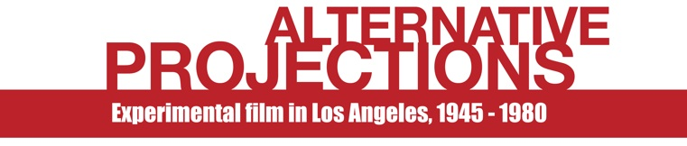
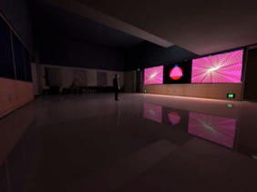
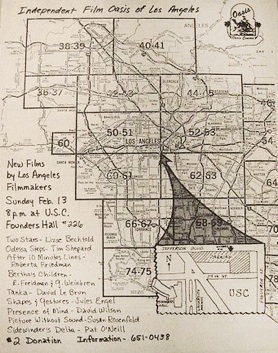

Alternative Projections: A Symposium and Film Festival

Friday November 12 - Sunday November 14, 2010
Gallery Exhibit, SCA Gallery
During select hours over the course of the symposium, there will be an exhibition in the SCA Gallery and Spielberg Building Lobby. The Lobby will include several display cases with historic posters, filmmaking artifacts, catalogues and original artwork. The exhibit is curated and mounted by Terry Cannon, who is an advisor on the Alternative Projections project team.
Gallery hours:
Friday November 12th, 2:00 pm - 8:00 pm
Saturday November 13th, 12:00 pm - 8:00 pm
Sunday November 14th, 11:00 am - 7:00 pm
Side Phase Drift 1965 by John Whitney Jr., in the SCA Gallery
Side Phase Drift 1965 is an abstract three-screen performance projection piece. Each frame was composed of sets of images that were manipulated in form, color, superimposition and time. The image sequences are logical permutations of a progressively evolving order. The images were realized on a mechanical analogue computer system called a CAM machine and an Optical Printer at Motion Graphics, Inc. The Optical Printer was modified with controls and accessories to facilitate the color sequencing which was based on complimentary color relationships utilizing a hierarchical system.

Side Phase Drift 1965 has been shown/performed all over the world, including a tour in the early 1970s under the auspices of the United States Information Services throughout Western and Eastern Europe and the Middle East.
Thanks to Motion Graphics, Inc., founded by John Whitney, Sr.,1962, for use of its studio facilities. For her contributions, special thanks to Glo Minaya, Technical Director, Digital Production, DisneyToon Studios, who has donated her time and resources to re-render the film in high resolution for this presentation.
USC, Los Angeles Filmforum and the filmmaker wish to gratefully acknowledge the donation of the digital projector from Epson America, Inc.

Saturday November 13th, 2010, 8:00 pm
The Eileen Norris Cinema Theatre
Special Presentation by Single Wing Turquoise Bird!
Followed by a Q&A panel with original members from the group, moderated by Adam Hyman
The Single Wing Turquoise Bird was the most significant light show in Los Angeles from 1967 to 1975, a "collective improvisation performance group" that used film, slide and liquid projections to marry the artistic possibilities of music, painting, and moving images. SWTB first played behind bands such as The Velvet Underground, The Who and Cream, then conducted its own performances in a loft space above the Fox Venice Theater.
During the past two years SWTB has re-formed to rehearse, perform and record new work. The current lineup includes original members Larry Janss, David Lebrun, Peter Mays, Jeffrey Perkins and Michael Scroggins, as well as new members Amy Halpern and Shayne Hood.
The program features old and new work by the group as well as films by the individual members.

1. The Single Wing Turquoise Bird Light Show Film, SWTB. (1970, 4 min., SD)
This is the only record of the original Single Wing Turquoise Bird light show. Shot in 1970, it was featured in the Visual Music Exhibition at Los Angeles MOCA and the Hirshhorn Museum in 2005.
2. Adagio for Jon and Helena, Michael Scroggins. (2009, 5 min., HD)
This silent film is the uncut filmed record of a single liquid plate performance.
3. Metamorphosis, David Lebrun. (2010, 14 min., HD)
An animated excursion through the history of man-made forms, patterns and symbols, based on material originally created for Single Wing Turquoise Bird in 1968.
4. Yoga-Sutras, Peter Mays. (2010, 12 min., HD).
An extended meditation, derived from 3D animations created for Single Wing performances.
5. Slum Goddess Goes To New Mexico, Larry Janss. (2010, 7 min., SD)
An homage to wanderlust in the ‘70s.
6. Jackpot, Shayne Hood. (1991, 3 min., SD)
An abstract animation.
7. Fluxus Film #22: Shout, Jeff Perkins. (1991, 3 min., SD)
Camera by Yoko Ono. This 16mm silent film premiered at the first Fluxus Film Festival in NYC in 1966.
8. Invocation, Amy Halpern. 2 min. (1982, 2 min., 16mm film)
A tiny step in the attempt to carve the immaterial.
9. Out of Our Depth, SWTB. (2010, 34 min., HD; World Premiere)
A journey through multiple worlds recorded from live, in-studio improvisation by the resurgent Bird.
Sunday November 14th, 2010, 4:30 pm
The Eileen Norris Cinema Theatre
Panel Discussion with members from Los Angeles Filmmakers Oasis
Moderated by Terry Cannon. Featuring Morgan Fisher, Roberta Friedman, Amy Halpern, Tom Leeser, Beverly O’Neill, Pat O’Neill, Grahame Weinbren, and David Wilson.

The Los Angeles Independent Film Oasis was an experimental film screening organization from 1976 to 1981. Founded by a group of filmmakers who were mostly teachers or students at Cal Arts or the Otis Art Institute, it also functioned as a nurturing meeting place to exchange information and ideas. Oasis -- whose members included Pat and Beverly O'Neill, Morgan Fisher, David & Diana Wilson, Grahame Weinbren and Roberta Friedman -- operated as a collective where each member could suggest suggest programming, and it held approximately one hundred fifty screenings, primarily focused on works of contemporary experimental filmmakers.
This panel follows a screening of works by Oasis members at 3:00pm.

About the Moderators:
Adam Hyman is Executive Director and Programmer for Los Angeles Filmforum. He has programmed over 200 shows since 1998, including historical retrospectives, tributes, and contemporary practitioners. Programming highlights include Shirley Clarke retrospective in 1998; a tribute to the late artist Nam June Paik, held at LACMA and co-presented with the Korean Cultural Center; several programs of animated documentaries, and experimental animation. Hyman has been a documentary filmmaker for the past fourteen years, producing and/or writing a variety of historical and archaeological documentaries that have aired on the PBS, the History Channel, the Learning Channel, and others. He recently co-produced Worse than War, a documentary on genocide and mass murder, which aired on PBS in April 2010. He co-produced the 2007 Oscar-nominated and Emmy-winning feature documentary Operation Homecoming: Writing the Wartime Experience and The Old, Weird America: Harry Smith’s Anthology of American Folk Music. He is currently directing and producing a film on R&B sax legend Big Jay McNeely. A native Angeleno, Hyman has an MFA in Film Production from the University of Southern California School of Cinema-Television.
Terry Cannon has been involved in the artistic and cultural life of Southern California since the mid-1970s. In 1975, he founded Pasadena Filmforum (now Los Angeles Filmforum), and served as its Executive Director for nine years. In 1984, after leaving Filmforum, Cannon founded SPIRAL, a quarterly magazine which examined significant topics related to experimental film and which featured writings and artworks by the filmmakers themselves. Cannon edited and published nine issues before the magazine’s demise in 1986. He has also, since 1988, served as President of the Board of Directors of the Museum of Jurassic Technology. In 1996, Cannon founded the Baseball Reliquary, a Pasadena-based nonprofit organization dedicated to fostering an appreciation of American art and culture through the prism of baseball history and to exploring the national pastime’s unparalleled creative possibilities. He continues to serve the Baseball Reliquary in the capacity of Executive Director.
Los Angeles Filmforum | Site Design by Stephanie Sapienza | Contact